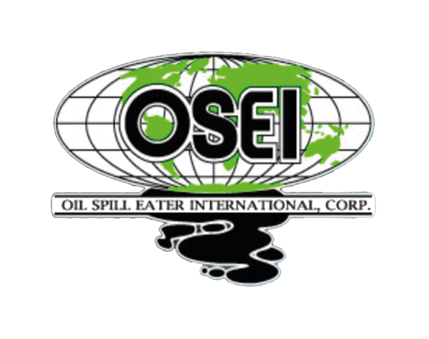

OSE2 é o processo de biorremediação mais ecológico, econômico e de resultados em mais curto prazo no mundo usado para mitigar vazamentos perigosos de hidrocarbonetos em qualquer material orgânico tóxico à base de carbono em qualquer profundidade.
Produto Americano com 30 anos de mercado.
Utilizado em mais de 120 países nas maiores empresas de petróleo do mundo.
Possui certificações individuais em mais de 26 países.
Único produto no mundo com 35 testes toxicológicos de impacto endocrinológico na vida marinha.
Participações com êxito em mais de 42 mil aplicações ao redor do mundo.
Equipamentos de emergência com engenheiros em "stand by" 365 dias por ano.
Biblioteca técnica com mais de 2.6 milhões de dólares em testes pagos por empresas independentes.
Usado nos Estados Unidos pela Marinha, Exército, Aeronáutica, Marinas, Guarda Costeira, Departamento de Defesa.
Usado em mais de 200 bases militares ao redor do mundo.
Na Bahia de San Diego a Marinha utiliza o produto há 4 anos como primeira resposta de emergência e reduziu os custos de remediação em mais de 90%.
Aprovado, Recomendado e Único na Categoria Aditivo de Enzima (27 Anos) na EPA – EUA.
Aprovado na mais rigorosa autoridade ambiental do mundo, Nova Zelândia.
Os biosurfactantes decompõem o óleo em nível molecular, liberando as moléculas de hidrogênio, isolando as partículas de carbono. O carbono perde completamente a sua capacidade de adesão em segundos e a toxicidade é drasticamente reduzida nos primeiros 30 minutos após a aplicação. O carbono está pronto para ser usado como alimento por bactérias locais.
Os nutrientes induzem o fortalecimento acelerado das bactérias locais. Criando as condições para a multiplicação bacteriana, catalisando os ataques das moléculas de carbono.
As enzimas, por sua vez, criam conexões proteicas e induzem as bactérias a usar carbono livre como fonte de alimento. Os 156 tipos diferentes de enzimas aceleram o processo de decomposição metabólica. Água e Gás Carbono (H2O E CO2). É o resultado final da digestão a nível molecular, totalmente inofensivo para a natureza e para o homem.
OSE 2 É um agente que promove a bioremediação, OSE 2 NÃO introduz qualquer tipo de bactéria no ambiente contaminado.
Quando produtos com bactérias são utilizados, ocorrem problemas como:
(Remediação, limpeza e recuperação)
Entre em contato conosco para mais informações sobre como o OSE2 pode resolver seus problemas de remediação ambiental.
Entre em Contato